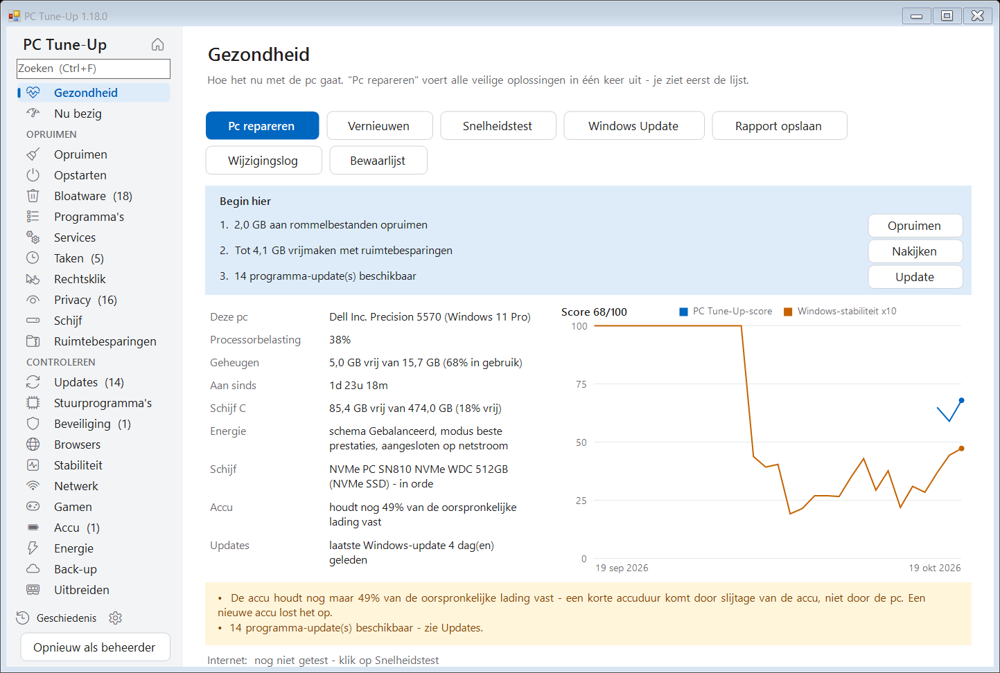
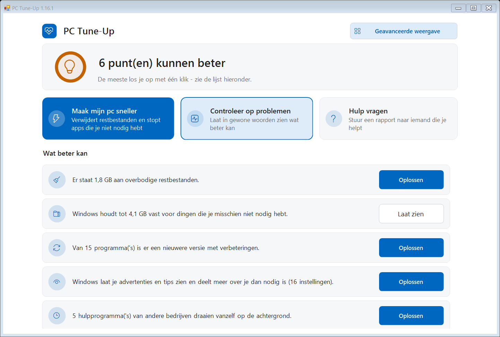
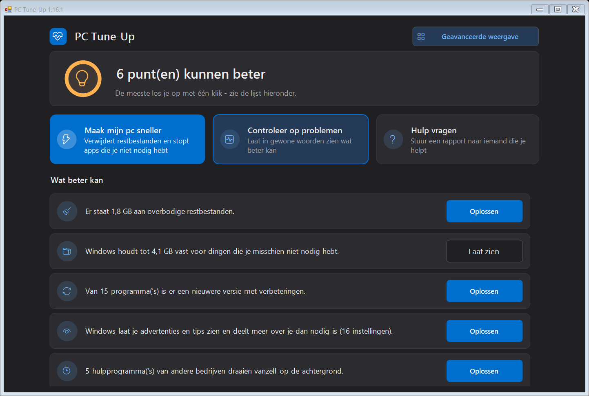
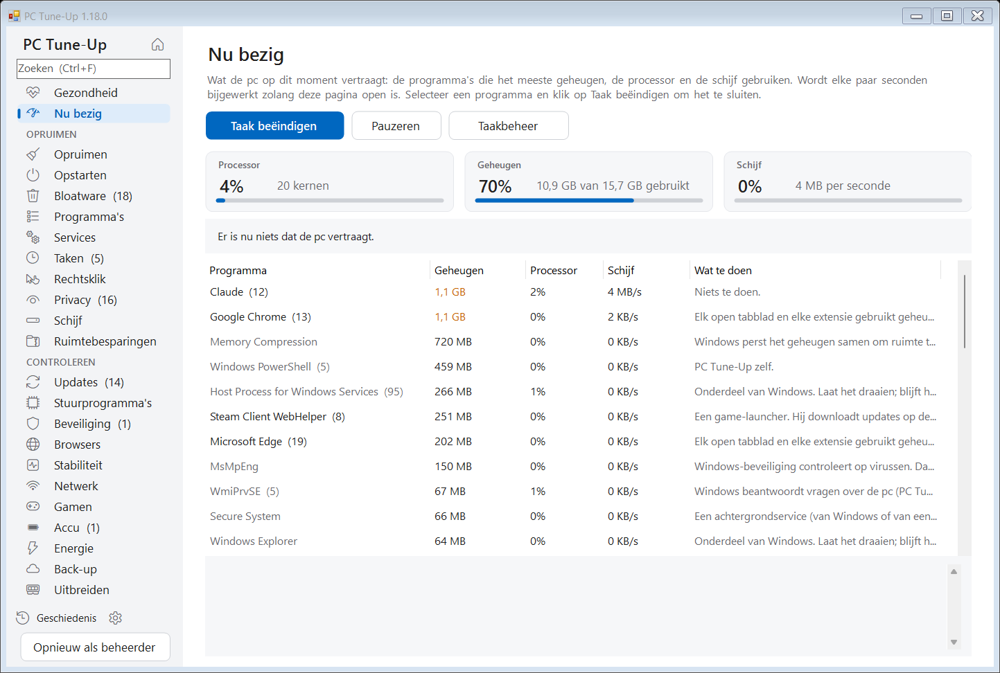
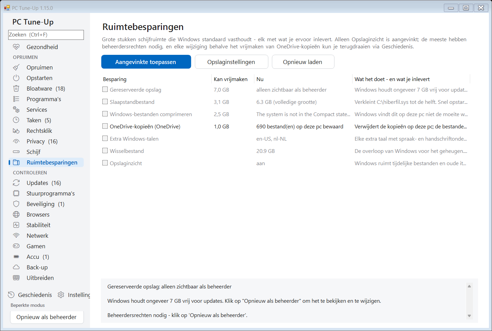
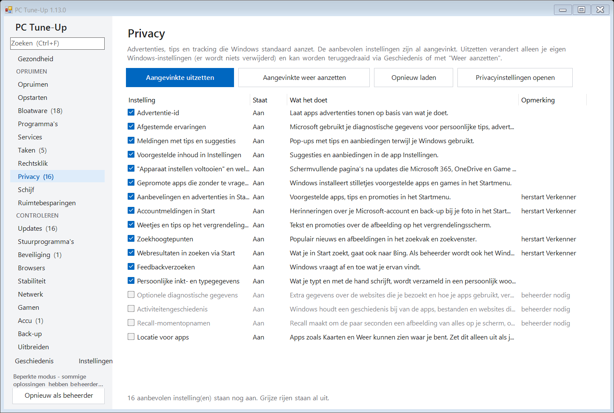
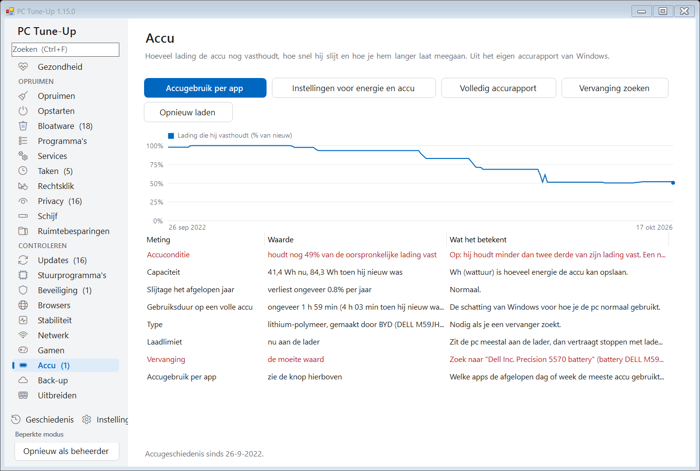
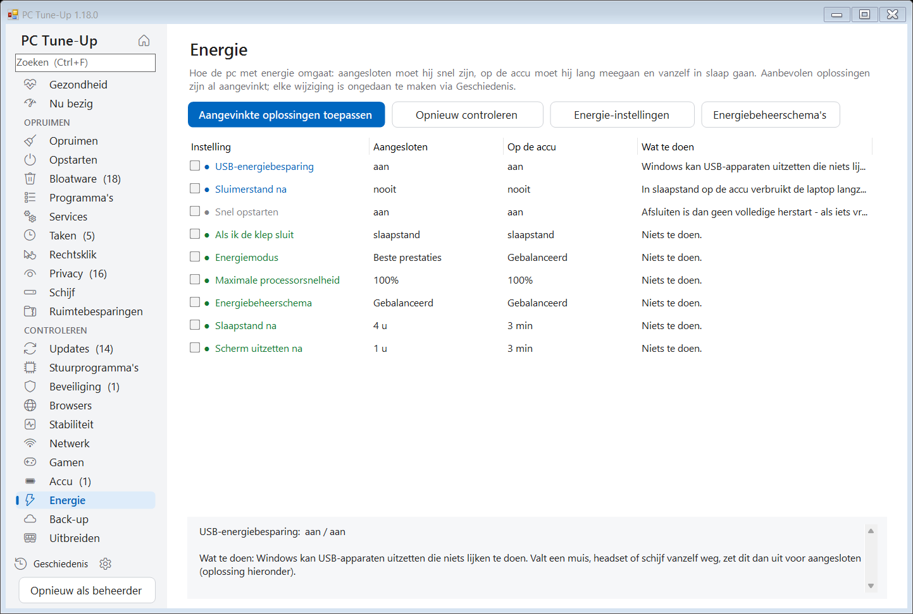
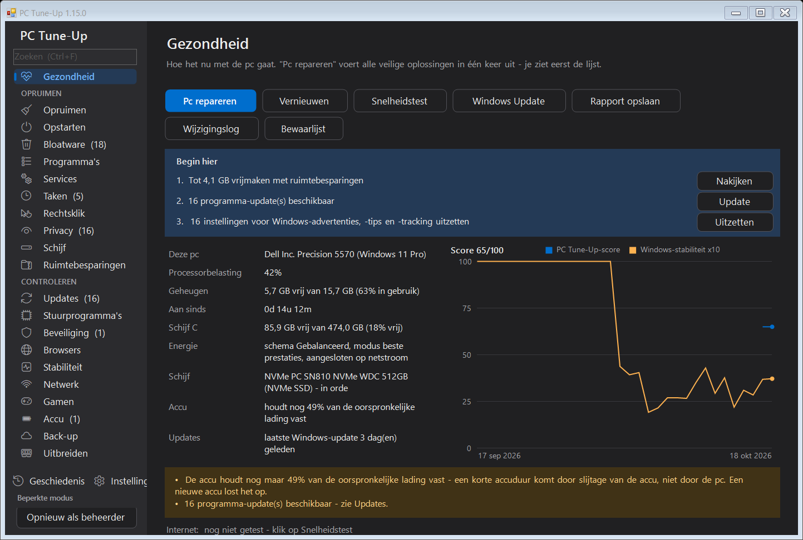

Controleer, ruim op en versnel elke Windows-pc.
PC Tune-Up vindt wat je pc vertraagt, legt het uit in gewone taal en lost het op met één klik - en elke wijziging kun je terugdraaien.
Gratis en open source (MIT). Windows 10 en 11. In het Nederlands, Engels, Duits, Frans, Spaans, Italiaans en Pools. Geen account, geen reclame.

Alles op één plek
Waar een pc-monteur naar kijkt, op 25 pagina's die je met Ctrl+F doorzoekt - en een vak "Begin hier" dat vertelt welke drie dingen nu het belangrijkst zijn.
Rommel en ruimte
Tijdelijke bestanden, crashdumps, browsercaches en Windows-restanten. Grote en dubbele bestanden. Ruimtebesparingen zoals het slaapstandbestand en OneDrive-kopieën.
Opstarten en bloatware
Apps die met Windows starten, voorgeïnstalleerde rommel van elk merk, ongebruikte programma's, achtergrondservices en geplande taken.
Privacy en menu's
Advertenties, tips en tracking van Windows één voor één uitgezet. Achtergebleven items in het rechtsklikmenu verborgen.
Nu bezig
Wat de pc op dit moment vertraagt: processor, geheugen en schijf, de programma's die ze gebruiken in gewone taal, en Taak beëindigen om er een te sluiten - plus hoe vol het geheugen de afgelopen 7 dagen was.
Updates en stuurprogramma's
Verouderde programma's bijgewerkt via winget, apparaten met een probleem, en hoe oud de belangrijke stuurprogramma's zijn.
Beveiliging en browsers
Ondersteuning van Windows, antivirus, firewall, versleuteling, Secure Boot - en browserextensies, afgedwongen instellingen, hosts-bestand en proxy-trucs die op adware lijken.
Crashes en stabiliteit
Crashes, vastlopers en blauwe schermen van de afgelopen 30 dagen, gegroepeerd naar de echte oorzaak, met oplossingen met één klik.
Netwerk en gamen
Wifi-signaal, vertraging, DNS-snelheid en onderbrekingen. Welke videokaart je game echt gebruikt, en wat hem verder afremt.
Accu en energie
Hoe versleten de accu is en waar je pc-maker de laadlimiet van 80% verstopt. Energiestand, slaapstand, scherm en klep: snel als hij is aangesloten, zuinig op de accu.
Back-up en upgrades
Of je bestanden een kapotte of gestolen pc zouden overleven. Welke geheugen-, schijf- en accu-upgrades in precies deze pc passen, en of ze de moeite waard zijn.
Zorgvuldig gebouwd
Een programma dat je pc opknapt, mag hem nooit slechter maken.
- ✓Elke wijziging staat op de pagina Geschiedenis, en bijna alles kun je met één klik terugdraaien.
- ✓Het vraagt het eerst en laat precies zien wat het gaat doen. Niets groots is vooraf aangevinkt.
- ✓Een eenvoudige weergave voor wie de details niet hoeft te zien: één rustig scherm, een status in gewone woorden, drie grote knoppen en alleen veilige oplossingen - en een knop om een rapport te sturen naar het familielid dat meestal helpt. Eén klik op Geavanceerde weergave toont alle hulpmiddelen.
- ✓Beveiligingssoftware, VPN's, stuurprogramma's en databases worden nooit aangeraakt, en je kunt je eigen programma's op een bewaarlijst zetten.
- ✓Als beheerder maakt het eerst een Windows-herstelpunt voor grotere wijzigingen.
- ✓Optioneel wekelijks onderhoud ruimt zelf rommel op en meldt alleen iets als er iets nieuws is.
- ✓Als Pc repareren klaar is, zie je wat er veranderd is - vrije ruimte, apps die met Windows starten, de score - voor en na.
- ✓Herinneringen voor dingen die te lang zijn blijven liggen - een herstart waar Windows op wacht, updates die blijven liggen, een opruimbeurt van lang geleden - elk met een knop Later.
- ✓Elke nieuwe versie wordt automatisch getest op een schone Windows-pc, in alle zeven talen.
Schermafbeeldingen
Licht en donker, net als je Windows-instelling.








Installeren
- Download PC-TuneUp.exe en start het. Het biedt aan zichzelf voor je te installeren - zonder beheerdersrechten - en houdt zichzelf up-to-date.
- Windows zegt de eerste keer misschien "Windows heeft uw pc beveiligd", omdat het programma nog niet digitaal ondertekend is. Klik op Meer informatie > Toch uitvoeren.
- Het opent in de eenvoudige weergave: klik op Maak mijn pc sneller, of los de punten in de lijst één voor één op. Voor alle hulpmiddelen klik je op Geavanceerde weergave en begin je met Pc repareren op de pagina Gezondheid. Gebruik Opnieuw als beheerder om ook de eigen bestanden en instellingen van Windows mee te nemen.
Binnenkort ook via winget: winget install MichaelKloprogge.PCTuneUp
Voor IT en scripts
PC-TuneUp.exe /report[:bestand.html] alles controleren en een rapport opslaan PC-TuneUp.exe /fix de veilige stappen van Pc repareren uitvoeren zonder te vragen PC-TuneUp.exe /auto het automatische onderhoud (opruimen, controleren, melden) PC-TuneUp.exe /install | /uninstall installeren of verwijderen voor de huidige gebruiker
Privacy
Alles draait op je eigen pc. PC Tune-Up heeft geen account, geen tracking en geen analyses, en er wordt niets over je pc verstuurd. Het enige internetgebruik is de updatecontrole (GitHub), de optionele snelheidstest (Cloudflare) en de programmalijst van winget.
De volledige broncode staat op GitHub, dus iedereen kan controleren wat het doet.